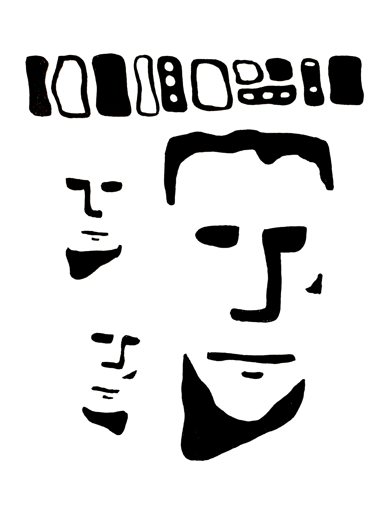

Vierailu näyttelyyn, joka kertoi brasilialaista 60-luvun pop-taiteesta, oli antoisa. Siellä näin yhä yksinkertaisempia tapoja esittää kasvoja ilmeikkäästi.
Tässä kokeilin tekniikkaa, jossa naama muodostuu vain yhdistelmäksi pintaerojen aiheuttamia varjoja. Näin verrokkityön museossa.
Suurin hahmo näyttää hieman Frankensteinilta.